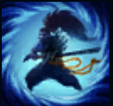
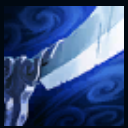
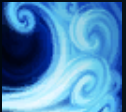
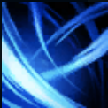

PASSIVE
WAY OF THE WANDERER
Yasuo's Critical Strike Chance is doubled. Additionally, Yasuo builds toward a shield whenever he is moving. The shield triggers when he takes damage from a champion or monster.

Q
STEEL TEMPEST
Thrusts forward, damaging all enemies in a line. On hit, grants a stack of Gathering Storm for a few seconds. At 2 stacks, Steel Tempest fires a whirlwind that knocks Airborne. Steel Tempest is treated as a basic attack and scales with all the same things.

W
WIND WALL
Creates a moving wall that blocks all enemy projectiles for 4 seconds.
E
SWEEPING BLADE
Dashes through target enemy, dealing magic damage. Each cast increases your next dash's base Damage, up to a max amount. Cannot be re-cast on the same enemy for a few seconds. If Steel Tempest is cast while dashing, it will strike as a circle.

R
LAST BREATH
Blinks to an Airborne enemy champion, dealing physical damage and holding all Airborne enemies in the area in the air. Grants maximum Flow but resets all stacks of Gathering Storm. For a moderate time afterwards, Yasuo's critical strikes gain significant Bonus Armor Penetration.